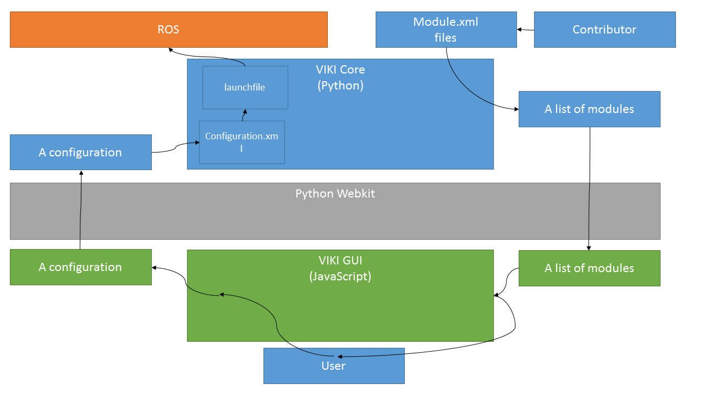

System Overview¶
The picture below is an overview of the system.
Start at the right top and follow the arrows to match the discription here:
- contributors People that have contributed modules to the framework they make module.xml files
- module.xml Several files that describe what nodes go together in what way, building blocks of an experimental setup
- VIKI CORE* The core, written in Python, interpretes the module.xml files and generates a list of modules.
- list of modules A list of modules that are now readily available in the system
- Python Webkit A webbrowser that opens the GUI frontend page. It has been wired via a dirty trick to make communication between javascript and Python possible: It simply changes the name of the page to send a message.
- list of modules Again a list of modules, now parsed in JavaScript
- VIKI GUI Graphical user interface, based on JavaScript. Uses the module list to build a pallette and uses the JsPlumb library for a drag-and-drop interface.
- user drags and drops in the GUI to create something he likes, tells the user to build a configuration
- configuration a set of modules connected together, with parameters, topic attached to each other etc. This is a full description of the experimental setup
- Python webkit used for communication to the Python backend again
- Configuration An abstraction of the complete experimental setup, in Python
- configuration.xml Human readable, temporary file that reflects the configuration. Basically just the DOM.
- Launchfile The core matches info in the configuration.xml with information from the module.xml files to generate a ROS runnable launch file. Calls ROS to launch if required.
- ROS Robot Operating System